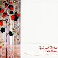

Celtic Lyrics Corner > Artists & Groups > Karine Polwart > Fairest Floo'er > The Death Of Queen Jane
|  | The Death Of Queen Jane |
| Credits : | Traditional; arranged by Karine Polwart |
| Appears On : | Fairest Floo'er |
| Language : | English |
| Other Versions : |
"
The Death Of Queen Jane
" on the Bothy Band's album The Best Of The Bothy Band
" The Death Of Queen Jane " on Méav Ní Mhaolchatha's album Méav |
Lyrics :
Queen Jane lay in labor full six days or more
While the women grew weary and the midwives gave o'er
And they sent for King Henry to come with great speed
To be with Queen Jane in her hour of need
King Henry came to her and he sat by her bedside
Saying, "What ails thee, my Jeannie? What ails thee, my bride?"
"Oh Henry, oh Henry, do this one thing for me
Rip open my right side and find my baby"
"Oh Jeannie, oh Jeannie, that never will do
It would lease thy sweet life and thy young baby, too"
Well, she wept and she wailed 'til she fell into a swoon
And her right side was opened and her baby was found
Well, that baby was christened the very next day
While his poor dead mother a-mouldering lay
And six men went before her and four more travelled on
While loyal King Henry stood mourning alone
He wept and he wailed until he was sore
Saying, "The flower of all England shall flourish no more"
He sat by the river with his head in his hands
Saying, "My merry England is a sorrowful land"